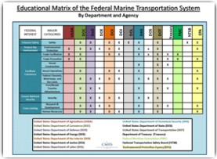
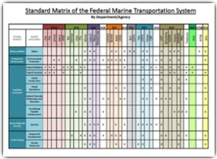
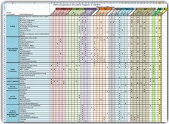

COMPENDIUM OF FEDERAL PROGRAMS IN THE MARINE TRANSPORTATION SYSTEM
Background
The Compendium of Federal Programs in the Marine Transportation System was developed by the Federal Maritime Commission (FMC) and the CMTS Executive Secretariat to better inform the family of U.S. Marine Transportation System (MTS) agencies of each other's MTS programs and responsibilities.
It was created to be a user-friendly document, organized in a manner that combines like programs, increases awareness of the diversity of Federal marine transportation programs, and provides points of contact for additional information and research.
The Compendium is a categorical matrix of programs and functions for the 35 Federal Departments, agencies, and bureaus engaged with the MTS. It includes a summary narrative, matrices, and clarifying text, which are intended to provide useful foundational information for Federal and non-Federal stakeholders. It is also intended to enable CMTS partner agencies to identify opportunities for improved Federal MTS program coordination.
Its format is modeled after the comparison of Federal MTS functions, which appeared in the summer 2011 MTS issue of the U.S. Coast Guard's Proceedings magazine, and it is organized around the four major Federal MTS interest areas that were identified in the Transportation Research Board 2004 study Marine Transportation System and the Federal Role. These interest areas are divided into 11 categories, which are further divided into the 75 functions/programs included in the Comprehensive Matrix.
Narrative
The Compendium team has written a summary document to outline the requirements, purpose, use and potential application and actions of the compendium.
Educational Matrix

This is the most basic version of the matrix. It retains the four interest areas and eleven categories but includes only the eleven overarching Federal Departments and independent agencies. This version is ideal for audiences who may be unfamiliar with the MTS and are seeking additional general background information regarding Federal Department oversight and engagement. It also includes some basic MTS facts and figures.
Educational Matrix of the Federal Marine Transportation System
Standard Matrix

The Standard Matrix adds federal departments, agencies, and bureaus to the four interest areas and eleven categories. This version is designed for audiences who have some familiarity with the MTS but who seek a more intimate knowledge of specific agency roles, responsibilities, and programs.
In addition, the Standard Matrix has a companion document of descriptive sentences. For each "x" on the matrix, the appropriate Department, agency, or bureau has contributed descriptive sentences of its role in the MTS for that category. This provides an explanation of exactly how the Department, agency, or bureau is involved with the MTS and under what jurisdiction. To simplify cross-referencing, the sentences are color-coded to match the matrix.
Comprehensive Matrix

The Comprehensive Matrix provides the most detailed information on all departments, agencies, and bureaus, including all four interest areas, eleven categories, and 75 programs and functions. It is the largest and most comprehensive categorical matrix of MTS programs and functions.
Comprehensive Matrix of the Federal Marine Transportation System